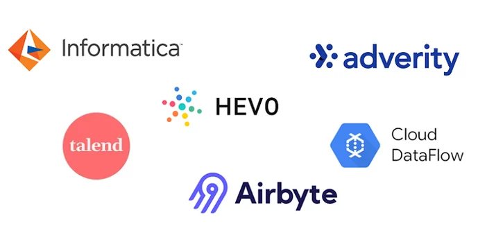
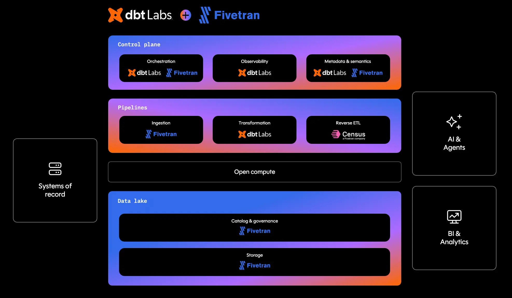

Your warehouse is connected and empty. dbt won’t do anything for you until there’s data in the warehouse to transform. The step that lands raw data is called ingestion — and in a real company, it isn’t your job.
Data engineers own ingestion. Their day-to-day is hooking up source systems (a Postgres replica of the production app, a Salesforce export, an event stream) to the warehouse so the raw bytes show up reliably. They use:

Whatever the mechanism, the end result is the same: tables in the warehouse with names like raw_customers, raw_orders, stripe_charges, segment_events — untouched copies of the source. Analytics engineers (you) start your day by reading those.
| If you’re a… | Your job is… |
|---|---|
| Analytics engineer (this course) | Transform the data that already landed in the warehouse. You trust that the raw_* tables exist and are fresh; you don’t need to know how they got there. Your output: clean, tested, documented marts that analysts and dashboards consume. |
| Data engineer | Own the infrastructure that powers ingestion (the E and L of ELT). Pick the right connector or write the custom job, monitor it, fix it when it breaks, make sure data in the warehouse stays up to date. You don’t write the business-logic SQL that turns raw bytes into “monthly active users”. |
The walls aren’t high — at small companies one person plays both roles — but the responsibilities are distinct. This course lives entirely on the analytics-engineer side. The Python script you’re about to run stands in for the data-engineering team so the rest of the lesson can focus on transformation.
This is the L in ELT. It already happened before any dbt model runs.
This course doesn’t come with a Fivetran subscription or a streaming Kafka cluster — that infrastructure is overkill for learning the analytics-engineer side of the stack. We mimic ingestion with a tiny Python script that does the same thing in 30 lines: read the CSVs in data/, write them as tables in DuckDB.
Source CSVs
data/raw_customers.csv
data/raw_orders.csv
data/raw_payments.csv
→
scripts/ingest_raw.py
read_csv_auto
+ CREATE OR REPLACE TABLE
→
database/dev.duckdb
main.raw_customers
main.raw_orders
main.raw_payments
From dbt’s point of view, the result is indistinguishable from a real ingestion pipeline: three raw_* tables sitting in main schema, ready to be modeled. The only thing the script skips is everything that makes real ingestion hard — auth, retries, schema evolution, incremental loads, monitoring.
dbt seed?dbt has a built-in command, dbt seed, that loads CSVs into the warehouse. We deliberately don’t use it here, even though it would technically work for the jaffle_shop CSVs. Two reasons:
raw_customers represents. Conflating the two leads to projects that try to seed real data and fall over the moment a CSV grows past a few MB.dbt seed later for what it’s actually good at. A later stage adds a real lookup table (a country-code reference, a plan-tier map) via dbt seed. By keeping the two concepts separate from the start, that lesson stays clean.The repo ships three CSVs in data/ at the top level (outside dbt_project/):
| File | Rows | What it represents |
|---|---|---|
raw_customers.csv |
~100 | Customer records: id, first_name, last_name |
raw_orders.csv |
~99 | Orders: id, user_id, order_date, status |
raw_payments.csv |
~113 | Payment events: id, order_id, payment_method, amount |
This is the canonical jaffle_shop dataset that ships with dbt’s own tutorials — a tiny imaginary cafe selling Australian breakfast sandwiches. Small on purpose: you can hold the whole schema in your head while learning.
Why are the CSVs in
data/instead ofdbt_project/seeds/? Becausedbt_project/is gitignored — if we put the CSVs there,dbt-learn resetwould delete them. Keeping them indata/means a reset only nukes your work, not the source data.
scripts/ingest_raw.py is short enough to read end-to-end:
con = duckdb.connect("database/dev.duckdb")
for csv in ["raw_customers.csv", "raw_orders.csv", "raw_payments.csv"]:
table = csv[:-4]
con.execute(
f"CREATE OR REPLACE TABLE {table} AS "
f"SELECT * FROM read_csv_auto('data/{csv}')"
)
Three things to notice:
CREATE OR REPLACE TABLE — idempotent. Re-running the script overwrites existing tables; you can re-ingest as many times as you want.read_csv_auto — DuckDB’s built-in CSV reader. It auto-detects delimiters, infers types, and can read directly into a table without an intermediate COPY.main schema — DuckDB’s default. Later, when you write dbt models, they’ll live in a different schema (something like main_main) and reference these raw tables via {{ source(...) }}.From the repo root (not from inside dbt_project/ — the previous exercise left you there, so cd .. first):
uv run scripts/ingest_raw.py
uv run picks up the project’s virtualenv automatically — you don’t have to remember to source .venv/bin/activate first. If you already have the venv active, python scripts/ingest_raw.py works the same.
You should see an Ingesting into database/dev.duckdb header followed by row counts (raw_customers: 100, raw_orders: 99, raw_payments: 113) and a Done. line. The walkthrough below shows the exact expected output.
You can verify by opening the file with the DuckDB CLI:
duckdb database/dev.duckdb -c "SELECT count(*) FROM raw_customers;"
dbt run has the file open, the script will hang or error. Close any open dbt processes first.raw_* are sources, not seeds. — Because we wrote these tables (not dbt seed), dbt doesn’t know about them yet. Stage 2 introduces {{ source(...) }} for exactly this case — a way to tell dbt about external tables it didn’t create.Press n to start the exercise.
1. Get back to the repo root. (The previous exercise left you inside dbt_project/.)
cd .. # only if you're still inside dbt_project/
pwd # should end in /learn_dbt
2. Make sure your virtualenv is active:
source .venv/bin/activate
3. Run the ingestion script:
python scripts/ingest_raw.py
You should see:
Ingesting into database/dev.duckdb
raw_customers: 100 rows
raw_orders: 99 rows
raw_payments: 113 rows
Done.
4. (Optional) Open the warehouse and poke around:
duckdb database/dev.duckdb -c "SHOW TABLES;"
duckdb database/dev.duckdb -c "SELECT * FROM raw_customers LIMIT 5;"
5. Press v to verify.
raw_customers, raw_orders, and raw_payments all exist somewhere in database/dev.duckdb’s schemas.The verifier doesn’t care how they got there — only that they’re present. Re-running the script is idempotent (CREATE OR REPLACE TABLE), so feel free to run it as many times as you like.
| Symptom | What to check |
|---|---|
ModuleNotFoundError: No module named 'duckdb' |
venv not active. Run source .venv/bin/activate. |
error: Failed to spawn: scripts/ingest_raw.py (or python: can't open file 'scripts/ingest_raw.py') |
You’re inside dbt_project/. Run cd .. first. |
FileNotFoundError: Missing CSV: data/raw_customers.csv |
You’re not in the repo root. cd to the directory that contains data/, scripts/, and database/. |
IO Error: Could not set lock on file ... dev.duckdb |
Another process (probably dbt) has the warehouse open. Close it and re-run. |
dbt seeddbt seed is dbt’s built-in CSV loader — it would technically work for these files. We’re avoiding it on purpose:
dbt seed is for lookup tables that ship with the code (country codes, plan-tier mappings). It’s the wrong abstraction for “raw operational data.”dbt seed for what it’s actually good at — a small reference table — and we want that lesson to stay clean.For now, treat scripts/ingest_raw.py as your stand-in for the data-engineering team.
Press n — next you’ll write your first dbt model on top of these raw tables.